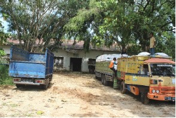

Jeruksari mapan sak kidul Desa Piyaman ingkang sameknika dipun sepuhi dening Bapak Eko Suranto, rumiyin katelah Ngomprongan kirang langkung warsa 1954 amargi wekdal semanten kangge ngutugi sata, menawi sampun rampung dipun panen saking kebon sata ingkang mapan ing sakidul lan wetanipun lumbung.
Sasampunipun lumbung sata mboten kangge malih udakawis warsa 1967, kebon sata dados kebon besaran (murbei) ingkang dipun upakawis dening para among tani Jeruksari. Murbei mujudaken pakan uler sutra ingkang dipun ginakaken kangge bakal sutra ing pabrik ATBM (Alat Tenun Bukan Mesin) ingkang sapunika dados lumbung pupuk ingkang dipun ginakaken para kadang tani ing tlatah Kabupaten Gunungkidul.
Sakidulipun lumbung pupuk wonten pasarean para Pahlawan saengga sinebat Taman Makam Pahlawan Bhakti Pertiwi. Pasarean punika dipun bangun dening Paprintahan ing warsa 1950. Samangke dipun ginakaken dening Dinas Sosial Daerah Istimewa Yogyakarta.